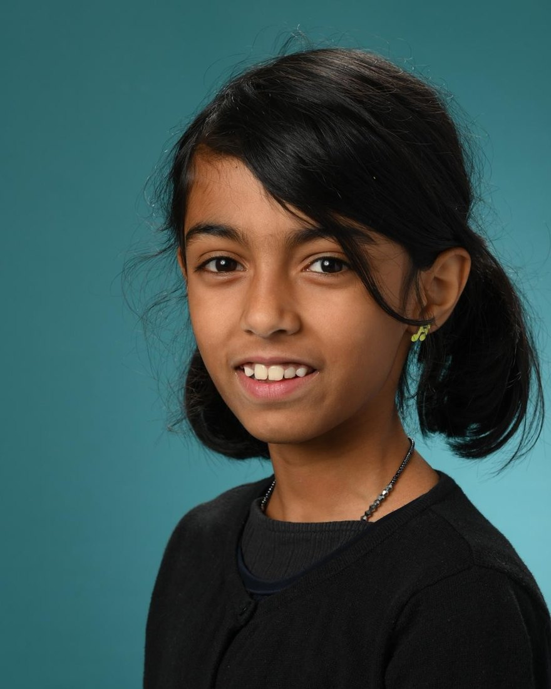

Fiber & Crochet Artist
Ananya
Handmade friends — each one stitched slowly, by hand, with its own name and story.
I · About Me
Hooked on one little stitch
Hi — I'm Ananya. I'm ten years old and completely, happily obsessed with crochet.
It all started two years ago, when a friend taught me one basic stitch. That single little loop was all it took — I was hooked! Since then I've taught myself everything else from videos, books, and a whole lot of imagination.
My very first plushies were… let's call them experimental — blobby little things with no real shape. But every wobbly one taught me something new. I still love that feeling, so I keep making exploratory pieces where I just start stitching with no plan at all and see who shows up. And honestly? You'll catch me crocheting everywhere — in the car, on the couch, probably right now.

- 10 Years old
- 2 Years crocheting
- 1 Stitch that started it all
- 100% Self-taught
II · Selected Works
The Gallery
A small collection of recent pieces. Select any to read its story.
III · How I Make Things
My messy, happy process
-
I
A spark (or not!)
Sometimes I have a plan… and sometimes I just grab my yarn and start with no idea what it'll turn into. Both are my favorite.
-
II
Learn as I go
Videos, books, and lots of imagination. If there's a stitch I don't know yet, I hunt it down and teach myself.
-
III
Stitch, stitch, stitch
Round after round, a shape starts to appear. Some become plushies; some become happy little blobs — and honestly those teach me the most.
-
IV
Meet the new friend
I add a face and suddenly a personality shows up. Then it gets a name — and it's ready for a hug.